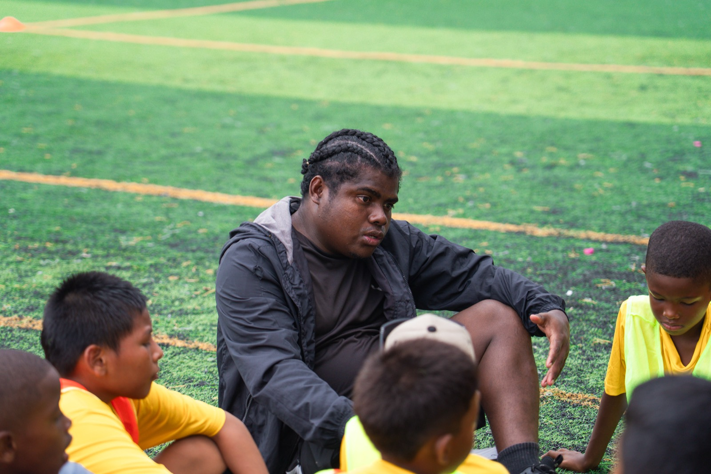
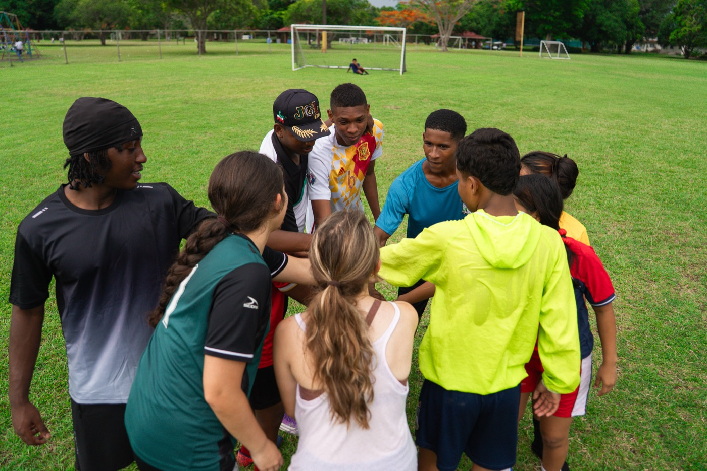
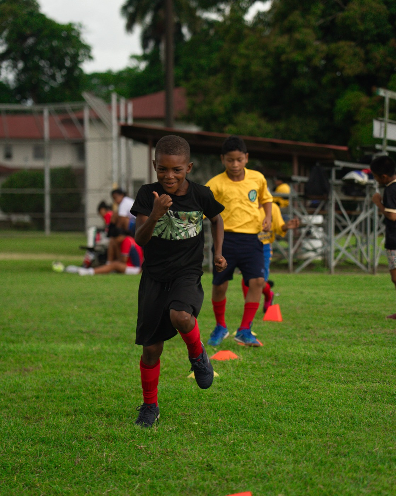
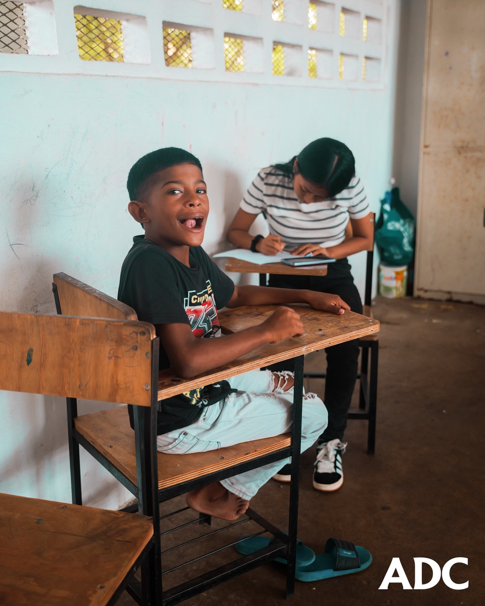
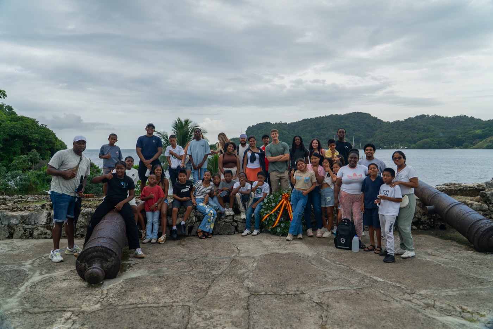
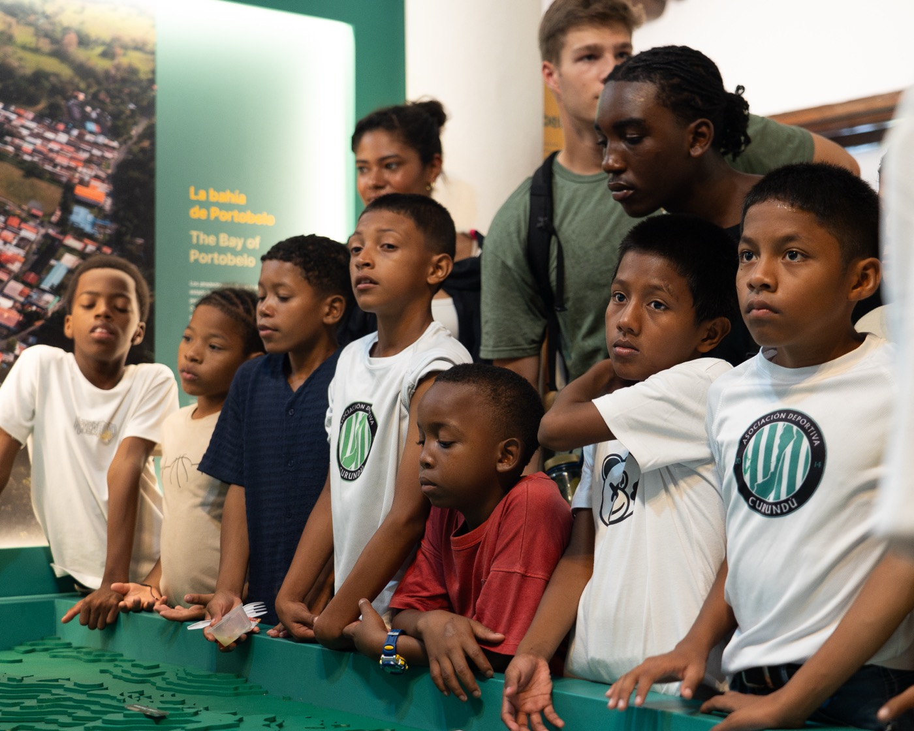

Nuestra historia
Acerca de ADC
Historia

Nacimos en Curundú en 2014
Asociación Deportiva Curundú (ADC) es una organización sin fines de lucro fundada en 2014 en el barrio de Curundú, Ciudad de Panamá. Nació de la convicción de que el deporte y la educación son herramientas transformadoras capaces de romper ciclos de vulnerabilidad social.
Desde nuestros primeros entrenamientos en canchas comunitarias con pocos recursos, hemos crecido hasta convertir a más de 1,200 niños y jóvenes en campeones — dentro y fuera del campo.
Nuestro trabajo se sustenta en tres pilares fundamentales: deporte, educación y nutrición, entendiendo que el desarrollo integral de cada atleta exige atender su cuerpo, su mente y su futuro.




Curundú Real
Tour con Propósito
Las palabras solo cuentan una parte de la historia. Ven a Curundú, camina sus canchas, conoce a los atletas y entiende de primera mano por qué este barrio inspira tanto a quienes lo visitan.
Nuestro Tour con Propósito es una experiencia guiada e inmersiva diseñada para conectarte directamente con la comunidad, los programas y las personas que hacen posible a ADC. No hay mejor manera de entender el impacto que verlo con tus propios ojos.
Liderazgo

Entrenador, Fundador y Presidente
Andrés Madrid
Con ADC y los MET Jaguars desde 2015. Entrenador de equipos U8, U10, U12, U14, U16, U12F y U18. Posee la certificación de fútbol Nivel C de Fepafut (Concacaf) y actualmente está cursando el Nivel B.

Entrenador, Fundador y Vicepresidente
César Santos
Con ADC desde 2015 y con los Met Jaguars desde 2022. Entrenador de equipos U8, U10, U12, U14, U16 y U18. Posee la certificación de fútbol Nivel C de Fepafut (Concacaf).

Asesor y Aliado
Javier Wallace
Con ADC desde 2015. Profesor en la Universidad de Duke y asesor de ADC. Co-propietario de Afrolatinx Tours, que facilita intercambios, viajes y giras de desarrollo sociocultural.
Lo que nos guía
Comunidad
Curundú es nuestro origen y nuestra razón de ser. Todo lo que hacemos busca fortalecer el tejido social de nuestro barrio.
Integridad
Operamos con transparencia total ante nuestros atletas, familias, aliados y donantes.
Excelencia
Exigimos lo mejor dentro y fuera del campo — en el deporte, en el aula y en la vida.
Inclusión
Las puertas de ADC están abiertas para todos los niños y jóvenes de la comunidad, sin importar su situación socioeconómica.
Cronología
Fundación de ADC
Primeros entrenamientos en canchas comunitarias de Curundú con un pequeño grupo de niños y la visión de cambiar vidas a través del deporte.
Primeras alianzas
Establecimiento de convenios con organizaciones locales para reforzar los programas de educación y nutrición.
Expansión del programa
Incorporación de nuevas categorías de edad y apertura de talleres educativos semanales para más de 40 atletas.
Alianzas internacionales
Primeras colaboraciones con organizaciones internacionales de apoyo al deporte social en América Latina.
10 años de impacto
Celebración de una década transformando vidas en Curundú con más de 130 atletas activos y más de 1,200 jóvenes formados desde sus inicios.
Logros
Nuestros logros en cancha
Atletas formados en ADC han sido convocados a representar a Panamá en torneos internacionales.
Exatletas de ADC compiten profesionalmente en Uruguay y Guatemala.
Sé parte de la historia
Tu apoyo hace posible que más niños de Curundú tengan acceso al deporte, la educación y la nutrición.